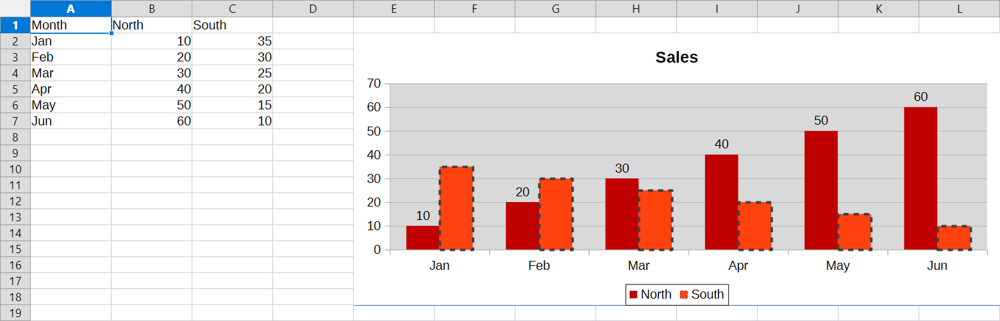
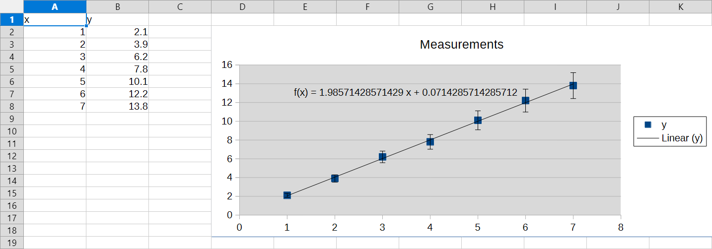

Formatting charts
The setters change what LibreOffice's chart edit mode changes: a series' fill and line, the legend, the axes, titles and labels. They work on the charts made here and on a file's own.
using OpenDocumentSpreadsheets
using OpenDocumentSpreadsheets.Charts
xf = newods("Data")
sh = xf["Data"]
sh["A1"] = "Month"; sh["B1"] = "North"; sh["C1"] = "South"
for (i, m) in enumerate(["Jan", "Feb", "Mar", "Apr", "May", "Jun"])
sh[i+1, 1] = m; sh[i+1, 2] = 10i; sh[i+1, 3] = 40 - 5i
end
c = addChart(sh, :column; anchor = "E2:L18", title = "Sales")
addSeries(c, "B2:B7"; categories = "A2:A7", name_ref = "B1")
addSeries(c, "C2:C7"; categories = "A2:A7", name_ref = "C1")
setSeriesFill(c, 1, "C00000")
setSeriesLine(c, 2; color = "404040", width = 2, dash = :sysDash)
setLegendPos(c, :b)
setAxisMin(c, :y, 0); setAxisMax(c, :y, 70); setAxisMajorUnit(c, :y, 10)
setChartTitleTextProp(c, :bold, true)
setLabelFlag(c, 1, :value, true)
Trendlines and error bars
LibreOffice's Insert ▸ Trend Line and Insert ▸ Y Error Bars:
xf = newods("Trend")
trend = xf["Trend"]
trend["A1:B1"] = ["x" "y"]
for (i, y) in enumerate([2.1, 3.9, 6.2, 7.8, 10.1, 12.2, 13.8])
trend[i+1, 1] = i; trend[i+1, 2] = y
end
c = addChart(trend, :scatter; anchor = "D2:K18", title = "Measurements")
addSeries(c, "B2:B8"; categories = "A2:A8", name_ref = "B1")
addTrendline(c, 1, :linear; displayEquation = true)
setErrorBars(c, 1; type = :percent, value = 10)
LibreOffice's model
Some setters follow LibreOffice's model of a chart:
- Theme colours (
:accent1,SchemeColor) are resolved against the document's theme, with their tints and shades applied. LibreOffice keeps colours in a chart, not links to the theme. - Line, XY and radar series have one colour, their line's and their symbols'.
- Legend corners (
:tr,:tl,:bl,:br) are custom positions. - A minor unit must divide the major one, since LibreOffice stores the number of minor steps.
Other options include gradients and hatches for fills, explosion of pie slices (setSeriesExplosion), and how axis labels are arranged (setAxisLabelArrangement).
The Charts: every function page lists every setter.
Not available
LibreOffice can't store these, so asking for one is an error that says why: titles that follow a cell, compound lines, line joins, marker borders, bubble-size labels, and text caps, kerning and outlines.